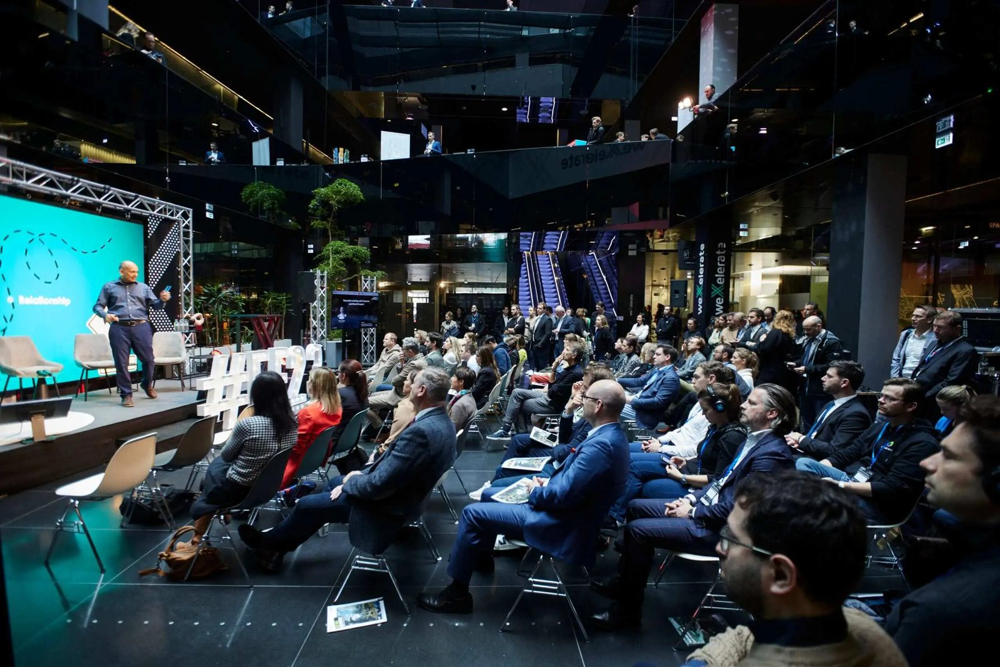

2025 Edition
We let the numbers speak

899
Attendees
With a golden ratio of CEOs and founders
42
Nations
Represented
215
Matchmaking
53+ hrs of 1:1 networking sessions
50+
Speakers
& experts on stage
40
Startups
Pitched live
19
Panels
Insights, inspiration, deep discussions, workshops, experiments and more.